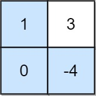

dp这一块我一直觉得是算法里面比较难的一块, 思路千奇百怪. 虽然核心思路都是记录状态, 从前状态推后状态从而得出结果, 然而实际题目里面很多时候会有各种各样的问题, 比如递推关系抽象不出来, 又或者情况复杂导致判断多, 边界处理不当等等.
这几天稍微刷了刷dp, 简单记录. 后续也会坚持刷刷dp, 对思维还是很有帮助的.
题目分类来自: 灵茶山艾府-分享丨【题单】动态规划（入门/背包/状态机/划分/区间/状压/数位/树形/数据结构优化）
入门
爬楼梯(前状态加到后状态)
基础: 2466. 统计构造好字符串的方案数
给你整数 zero ，one ，low 和 high ，我们从空字符串开始构造一个字符串，每一步执行下面操作中的一种：
- 将 '0' 在字符串末尾添加
zero次。
- 将 '1' 在字符串末尾添加
one次。
以上操作可以执行任意次。
如果通过以上过程得到一个 长度 在 low 和 high 之间（包含上下边界）的字符串，那么这个字符串我们称为 好 字符串。
请你返回满足以上要求的 不同 好字符串数目。由于答案可能很大，请将结果对 10^9 + 7 取余 后返回。
1 | 示例 1： |
爬楼梯问题, 在上一次的基础上爬zero或者one个台阶.
1 | class Solution: |
进阶: 2266. 统计打字方案数
Alice 在给 Bob 用手机打字。数字到字母的 对应 如下图所示。

为了 打出 一个字母，Alice 需要 按 对应字母 i 次，i 是该字母在这个按键上所处的位置。
比方说，为了按出字母 's' ，Alice 需要按 '7' 四次。类似的， Alice 需要按 '5' 两次得到字母 'k' 。
注意，数字 '0' 和 '1' 不映射到任何字母，所以 Alice不使用它们。
但是，由于传输的错误，Bob 没有收到 Alice 打字的字母信息，反而收到了 按键的字符串信息 。
比方说，Alice 发出的信息为 "bob" ，Bob 将收到字符串 "2266622" 。
给你一个字符串 pressedKeys ，表示 Bob 收到的字符串，请你返回 Alice 总共可能发出多少种文字信息 。
由于答案可能很大，将它对 10^9 + 7 取余 后返回。
1 | 示例 1： |
9键输入转可能输出. 反向爬楼梯, 读到连续k个输入的时候每次下个输入都可以建立在合法的k-1,k-2,k-3上(如果为79还有k-4).
针对79和其他输入, 我们分three_stack和four_stack, 检测连续输入, 做叠加即可获取长度为n的连续同字符输入. 然后不同group做乘积即可.
当然, 由于同字符连续输入的输出可能数量总相同, 所以可以预处理先算出所有可能数量, 然后直接统计连续字符数去查询结果就行.
1 | class Solution: |
打家劫舍
基础: 198. 打家劫舍
你是一个专业的小偷，计划偷窃沿街的房屋。每间房内都藏有一定的现金，影响你偷窃的唯一制约因素就是相邻的房屋装有相互连通的防盗系统，如果两间相邻的房屋在同一晚上被小偷闯入，系统会自动报警。
给定一个代表每个房屋存放金额的非负整数数组，计算你 不触动警报装置的情况下 ，一夜之内能够偷窃到的最高金额。
1 | 示例 1： |
每次偷窃与否基于前两个状态. 即 f(n+1) = max(f(n),f(n-1)+value[n+1]).
1 | class Solution: |
进阶: 3186. 施咒的最大总伤害
一个魔法师有许多不同的咒语。
给你一个数组 power ，其中每个元素表示一个咒语的伤害值，可能会有多个咒语有相同的伤害值。
已知魔法师使用伤害值为 power[i] 的咒语时，他们就 不能 使用伤害为 power[i] - 2 ，power[i] - 1 ，power[i] + 1 或者 power[i] + 2 的咒语。
每个咒语最多只能被使用 一次 。
请你返回这个魔法师可以达到的伤害值之和的 最大值 。
1 | 示例 1： |
首先最先看到是长度为3的打家劫舍, 初始思路可以直接找到最小值和最大值, 然后遍历一遍过去, 当打家劫舍来处理即可.
1 | class Solution: |
非常直观, 但是很可惜这么写会直接TLE. 因为从min到max这中间计算了太多无用状态, 优化解法为调用counter, 排序key, 然后依序读取key来处理(流程优化, 其实也就是将中间数值为0的部分做直接传递而非逐步计算).
1 | class Solution: |
最大子数组和
核心部分kadane算法, 即
1 | curr = 0 |
其中curr表示到i这个元素的时候可能构成的最大值, (curr+i)表示包含i,且curr表示上一个此状态的迭代解, i表示不包含前状态的解.
基础: 53. 最大子数组和
给你一个整数数组 nums ，请你找出一个具有最大和的连续子数组（子数组最少包含一个元素），返回其最大和。
子数组是数组中的一个连续部分。
1 | 示例 1： |
1 | class Solution: |
进阶1: 918. 环形子数组的最大和
给定一个长度为 n 的环形整数数组 nums ，返回 nums 的非空 子数组 的最大可能和 。
环形数组 意味着数组的末端将会与开头相连呈环状。形式上， nums[i] 的下一个元素是 nums[(i + 1) % n] ， nums[i] 的前一个元素是 nums[(i - 1 + n) % n] 。
子数组 最多只能包含固定缓冲区 nums 中的每个元素一次。形式上，对于子数组 nums[i], nums[i + 1], ..., nums[j] ，不存在 i <= k1, k2 <= j 其中 k1 % n == k2 % n 。
1 | 示例 1： |
掌握思路就很简单, 两种可能:
- 找中间部分最大(kadane)
- 最大部分为尾串+首串; 又由于数组大小总数一定, 即找到中间部分最小的字串, 依旧是kadane.
进阶2: 1191. K 次串联后最大子数组之和
给定一个整数数组 arr 和一个整数 k ，通过重复 k 次来修改数组。
例如，如果 arr = [1, 2] ， k = 3 ，那么修改后的数组将是 [1, 2, 1, 2, 1, 2] 。
返回修改后的数组中的最大的子数组之和。注意，子数组长度可以是 0，在这种情况下它的总和也是 0。
由于 结果可能会很大，需要返回的 10^9 + 7 的 模 。
1 | 示例 1： |
情况拆分, k == 1直接kadane即可; 一旦k大于1, 那么如果arr总和大于0, 那么我们一定会尽可能多读, 相当于kadane(arr+arr)+(k-2) * sum, 反之如果arr总和小于0, 那么我们直接对两个arr做kadane即可, 相当于kadane(arr+arr).
1 | class Solution: |
1186. 删除一次得到子数组最大和
给你一个整数数组，返回它的某个 非空 子数组（连续元素）在执行一次可选的删除操作后，所能得到的最大元素总和。换句话说，你可以从原数组中选出一个子数组，并可以决定要不要从中删除一个元素（只能删一次哦），（删除后）子数组中至少应当有一个元素，然后该子数组（剩下）的元素总和是所有子数组之中最大的。
注意，删除一个元素后，子数组 不能为空。
示例 1：
输入：arr = [1,-2,0,3]
输出：4
解释：我们可以选出 [1, -2, 0, 3]，然后删掉 -2，这样得到 [1, 0, 3]，和最大。
示例 2：
输入：arr = [1,-2,-2,3]
输出：3
解释：我们直接选出 [3]，这就是最大和。
示例 3：
输入：arr = [-1,-1,-1,-1]
输出：-1
解释：最后得到的子数组不能为空，所以我们不能选择 [-1] 并从中删去 -1 来得到 0。
我们应该直接选择 [-1]，或者选择 [-1, -1] 再从中删去一个 -1。
提示：
1 <= arr.length <= 105-104 <= arr[i] <= 104
很有意思的题, 首先kadane算法算出来的是不可删除元素的,一直到元素i的解.
不删元素的迭代式记为dp_0, 如果删除一个元素, 我们把迭代式记为dp_1; 那么我们可能删除最后一个元素, 那么从前一个元素开始就不可以删除其他元素, 答案为dp_0; 又或者保留最后一个元素, 允许dp_1删除前面的元素, 那么答案为dp_1+i.
需要先计算dp_1, 如果先算dp_0那我们就相当于在用第二轮的dp_0算第一轮的dp_1.
1 | class Solution: |
思路扩展: 152. 乘积最大子数组
给你一个整数数组 nums ，请你找出数组中乘积最大的非空连续子数组（该子数组中至少包含一个数字），并返回该子数组所对应的乘积。
测试用例的答案是一个 32-位 整数。
1 | 示例 1: |
掌握思路就简单, 读入小于0的时候用最小值来获取最大值, 读入大于0用最大值获取最大值.
1 | class Solution: |
网格dp
主要是网格移动相关.
基础点的
2684. 矩阵中移动的最大次数
给你一个下标从 0 开始、大小为 m x n 的矩阵 grid ，矩阵由若干 正 整数组成。
你可以从矩阵第一列中的 任一 单元格出发，按以下方式遍历 grid ：
从单元格 (row, col) 可以移动到 (row - 1, col + 1)、(row, col + 1) 和 (row + 1, col + 1) 三个单元格中任一满足值 严格 大于当前单元格的单元格。
返回你在矩阵中能够 移动 的 最大 次数。
1 | 示例 1： |
老实说我觉得这更像一个遍历的题而不是dp的题. 当dp的话就检测每一列的可以到达点, 然后下一轮继续. 我当时写的一个O(m*n)时间带剪枝+O(1)空间的dp.
1 | class Solution: |
2304. 网格中的最小路径代价
给你一个下标从 0 开始的整数矩阵 grid ，矩阵大小为 m x n ，由从 0 到 m * n - 1 的不同整数组成。你可以在此矩阵中，从一个单元格移动到 下一行 的任何其他单元格。如果你位于单元格 (x, y) ，且满足 x < m - 1 ，你可以移动到 (x + 1, 0), (x + 1, 1), ..., (x + 1, n - 1) 中的任何一个单元格。注意： 在最后一行中的单元格不能触发移动。
每次可能的移动都需要付出对应的代价，代价用一个下标从 0 开始的二维数组 moveCost 表示，该数组大小为 (m * n) x n ，其中 moveCost[i][j] 是从值为 i 的单元格移动到下一行第 j 列单元格的代价。从 grid 最后一行的单元格移动的代价可以忽略。
grid 一条路径的代价是：所有路径经过的单元格的 值之和 加上 所有移动的 代价之和 。从 第一行 任意单元格出发，返回到达 最后一行 任意单元格的最小路径代价。
1 | 示例 1： |
描述复杂得要死, 实际就是个暴力, O(m*n^2).
1 | class Solution: |
进阶
整体来说还是有一些难度的, 前面可能一眼看穿秒秒秒, 后面慢慢难度就上来了.
1594. 矩阵的最大非负积
给你一个大小为 m x n 的矩阵 grid 。最初，你位于左上角 (0, 0) ，每一步，你可以在矩阵中 向右 或 向下 移动。
在从左上角 (0, 0) 开始到右下角 (m - 1, n - 1) 结束的所有路径中，找出具有 最大非负积 的路径。路径的积是沿路径访问的单元格中所有整数的乘积。
返回 最大非负积 对 109 + 7 取余 的结果。如果最大积为 负数 ，则返回 -1 。
注意，取余是在得到最大积之后执行的。
示例 1：

输入：grid = [[-1,-2,-3],[-2,-3,-3],[-3,-3,-2]]
输出：-1
解释：从 (0, 0) 到 (2, 2) 的路径中无法得到非负积，所以返回 -1 。
示例 2：

输入：grid = [[1,-2,1],[1,-2,1],[3,-4,1]]
输出：8
解释：最大非负积对应的路径如图所示 (1 * 1 * -2 * -4 * 1 = 8)
示例 3：

输入：grid = [[1,3],[0,-4]]
输出：0
解释：最大非负积对应的路径如图所示 (1 * 0 * -4 = 0)
非常直观的min,max双状态dp
1 | class Solution: |
1301. 最大得分的路径数目
给你一个正方形字符数组 board ，你从数组最右下方的字符 'S' 出发。
你的目标是到达数组最左上角的字符 'E' ，数组剩余的部分为数字字符 1, 2, ..., 9 或者障碍 'X'。在每一步移动中，你可以向上、向左或者左上方移动，可以移动的前提是到达的格子没有障碍。
一条路径的 「得分」 定义为：路径上所有数字的和。
请你返回一个列表，包含两个整数：第一个整数是 「得分」 的最大值，第二个整数是得到最大得分的方案数，请把结果对 10^9 + 7 取余。
如果没有任何路径可以到达终点，请返回 [0, 0] 。
1 | 示例 1： |
挺简单的, 应该不算hard. 比较烦的也就是从右下到左上, 以及全图都是字符串需要额外处理. 次数的话每次检测最大值的时候顺手算一下多少输入源可获得最大值, 然后频率加上去就行.
1 | class Solution: |
2435. 矩阵中和能被 K 整除的路径
给你一个下标从 0 开始的 m x n 整数矩阵 grid 和一个整数 k 。你从起点 (0, 0) 出发，每一步只能往 下 或者往 右 ，你想要到达终点 (m - 1, n - 1) 。
请你返回路径和能被 k 整除的路径数目，由于答案可能很大，返回答案对 109 + 7 取余 的结果。
示例 1：

输入：grid = [[5,2,4],[3,0,5],[0,7,2]], k = 3
输出：2
解释：有两条路径满足路径上元素的和能被 k 整除。
第一条路径为上图中用红色标注的路径，和为 5 + 2 + 4 + 5 + 2 = 18 ，能被 3 整除。
第二条路径为上图中用蓝色标注的路径，和为 5 + 3 + 0 + 5 + 2 = 15 ，能被 3 整除。
示例 2：
输入：grid = [[0,0]], k = 5
输出：1
解释：红色标注的路径和为 0 + 0 = 0 ，能被 5 整除。
示例 3：

输入：grid = [[7,3,4,9],[2,3,6,2],[2,3,7,0]], k = 1
输出：10
解释：每个数字都能被 1 整除，所以每一条路径的和都能被 k 整除。
三层嵌套, dp里面每个元素是一个长度为k的列表, 每次读入数据的时候先合并染后shift一下.
1 | class Solution: |
174. 地下城游戏
恶魔们抓住了公主并将她关在了地下城 dungeon 的 右下角 。地下城是由 m x n 个房间组成的二维网格。我们英勇的骑士最初被安置在 左上角 的房间里，他必须穿过地下城并通过对抗恶魔来拯救公主。
骑士的初始健康点数为一个正整数。如果他的健康点数在某一时刻降至 0 或以下，他会立即死亡。
有些房间由恶魔守卫，因此骑士在进入这些房间时会失去健康点数（若房间里的值为负整数，则表示骑士将损失健康点数）；其他房间要么是空的（房间里的值为 0），要么包含增加骑士健康点数的魔法球（若房间里的值为正整数，则表示骑士将增加健康点数）。
为了尽快解救公主，骑士决定每次只 向右 或 向下 移动一步。
返回确保骑士能够拯救到公主所需的最低初始健康点数。
注意：任何房间都可能对骑士的健康点数造成威胁，也可能增加骑士的健康点数，包括骑士进入的左上角房间以及公主被监禁的右下角房间。
示例 1：

输入：dungeon = [[-2,-3,3],[-5,-10,1],[10,30,-5]]
输出：7
解释：如果骑士遵循最佳路径：右 -> 右 -> 下 -> 下 ，则骑士的初始健康点数至少为 7 。
示例 2：
输入：dungeon = [[0]]
输出：1
思路很不好想, 这题入口点在"从最后一格到第一格", dp记录从[m-1,n-1]到当前位置的最小值. 针对输入我们取最大值, 如果最大值大于0我们取0, 否则保持负数. 最后从dp[0]做返回.
1 | class Solution: |
329. 矩阵中的最长递增路径
给定一个 m x n 整数矩阵 matrix ，找出其中 最长递增路径 的长度。
对于每个单元格，你可以往上，下，左，右四个方向移动。 你 不能 在 对角线 方向上移动或移动到 边界外（即不允许环绕）。
示例 1：

输入：matrix = [[9,9,4],[6,6,8],[2,1,1]]
输出：4
解释：最长递增路径为 [1, 2, 6, 9]。
示例 2：

输入：matrix = [[3,4,5],[3,2,6],[2,2,1]]
输出：4
解释：最长递增路径是 [3, 4, 5, 6]。注意不允许在对角线方向上移动。
示例 3：
输入：matrix = [[1]]
输出：1
老实说这题更像是dfs.
1 | class Solution: |
2328. 网格图中递增路径的数目
给你一个 m x n 的整数网格图 grid ，你可以从一个格子移动到 4 个方向相邻的任意一个格子。
请你返回在网格图中从 任意 格子出发，达到 任意 格子，且路径中的数字是 严格递增 的路径数目。由于答案可能会很大，请将结果对 10^9 + 7 取余 后返回。
如果两条路径中访问过的格子不是完全相同的，那么它们视为两条不同的路径。
示例 1：

输入：grid = [[1,1],[3,4]]
输出：8
解释：严格递增路径包括：
- 长度为 1 的路径：[1]，[1]，[3]，[4] 。
- 长度为 2 的路径：[1 -> 3]，[1 -> 4]，[3 -> 4] 。
- 长度为 3 的路径：[1 -> 3 -> 4] 。
路径数目为 4 + 3 + 1 = 8 。
示例 2：
输入：grid = [[1],[2]]
输出：3
解释：严格递增路径包括：
- 长度为 1 的路径：[1]，[2] 。
- 长度为 2 的路径：[1 -> 2] 。
路径数目为 2 + 1 = 3 。
dfs做法, 可以调cache装饰器, 但是占用内存会多一些, 自己手写一个dp表做查询更省内存.
1 | class Solution: |
也可以拓扑排序, 从数值最低的点开始处理.
1 | class Solution: |
2267. 检查是否有合法括号字符串路径
一个括号字符串是一个 非空 且只包含 '(' 和 ')' 的字符串。如果下面 任意 条件为 真 ，那么这个括号字符串就是 合法的 。
- 字符串是
()。 - 字符串可以表示为
AB（A连接B），A和B都是合法括号序列。 - 字符串可以表示为
(A)，其中A是合法括号序列。
给你一个 m x n 的括号网格图矩阵 grid 。网格图中一个 合法括号路径 是满足以下所有条件的一条路径：
- 路径开始于左上角格子
(0, 0)。 - 路径结束于右下角格子
(m - 1, n - 1)。 - 路径每次只会向 下 或者向 右 移动。
- 路径经过的格子组成的括号字符串是 合法 的。
如果网格图中存在一条 合法括号路径 ，请返回 true ，否则返回 false 。
示例 1：

输入：grid = [["(","(","("],[")","(",")"],["(","(",")"],["(","(",")"]]
输出：true
解释：上图展示了两条路径，它们都是合法括号字符串路径。
第一条路径得到的合法字符串是 "()(())" 。
第二条路径得到的合法字符串是 "((()))" 。
注意可能有其他的合法括号字符串路径。
示例 2：

输入：grid = [[")",")"],["(","("]]
输出：false
解释：两条可行路径分别得到 "))(" 和 ")((" 。由于它们都不是合法括号字符串，我们返回 false 。
提示：
m == grid.lengthn == grid[i].length1 <= m, n <= 100grid[i][j]要么是'('，要么是')'。
dfs即可
1 | class Solution: |
1937. 扣分后的最大得分
给你一个 m x n 的整数矩阵 points （下标从 0 开始）。一开始你的得分为 0 ，你想最大化从矩阵中得到的分数。
你的得分方式为：每一行 中选取一个格子，选中坐标为 (r, c) 的格子会给你的总得分 增加 points[r][c] 。
然而，相邻行之间被选中的格子如果隔得太远，你会失去一些得分。对于相邻行 r 和 r + 1 （其中 0 <= r < m - 1），选中坐标为 (r, c1) 和 (r + 1, c2) 的格子，你的总得分 减少 abs(c1 - c2) 。
请你返回你能得到的 最大 得分。
abs(x) 定义为：
- 如果
x >= 0，那么值为x。
- 如果
x < 0，那么值为-x。
示例 1：

输入：points = [[1,2,3],[1,5,1],[3,1,1]]
输出：9
解释：
蓝色格子是最优方案选中的格子，坐标分别为 (0, 2)，(1, 1) 和 (2, 0) 。
你的总得分增加 3 + 5 + 3 = 11 。
但是你的总得分需要扣除 abs(2 - 1) + abs(1 - 0) = 2 。
你的最终得分为 11 - 2 = 9 。
示例 2：

输入：points = [[1,5],[2,3],[4,2]]
输出：11
解释：
蓝色格子是最优方案选中的格子，坐标分别为 (0, 1)，(1, 1) 和 (2, 0) 。
你的总得分增加 5 + 3 + 4 = 12 。
但是你的总得分需要扣除 abs(1 - 1) + abs(1 - 0) = 1 。
你的最终得分为 12 - 1 = 11 。
提示：
m == points.lengthn == points[r].length1 <= m, n <= 1051 <= m * n <= 1050 <= points[r][c] <= 105
https://leetcode.cn/problems/maximum-number-of-points-with-cost/description/
涉及到绝对值拆分, 对于第i行k列和前一行的第j列, 我们有
\[ j < k: dp(k) = dp(j) - (k-j) + grid[i][k] \\ j >= k: dp(k) = dp(j) - (j-k) + grid[i][k] \]
所以我们可以对某一行同时从左从右遍历.
1 | class Solution: |
1463. 摘樱桃 II
给你一个 rows x cols 的矩阵 grid 来表示一块樱桃地。 grid 中每个格子的数字表示你能获得的樱桃数目。
你有两个机器人帮你收集樱桃，机器人 1 从左上角格子 (0,0) 出发，机器人 2 从右上角格子 (0, cols-1) 出发。
请你按照如下规则，返回两个机器人能收集的最多樱桃数目：
- 从格子
(i,j)出发，机器人可以移动到格子(i+1, j-1)，(i+1, j)或者(i+1, j+1)。 - 当一个机器人经过某个格子时，它会把该格子内所有的樱桃都摘走，然后这个位置会变成空格子，即没有樱桃的格子。
- 当两个机器人同时到达同一个格子时，它们中只有一个可以摘到樱桃。
- 两个机器人在任意时刻都不能移动到
grid外面。 - 两个机器人最后都要到达
grid最底下一行。
示例 1：

输入：grid = [[3,1,1],[2,5,1],[1,5,5],[2,1,1]]
输出：24
解释：机器人 1 和机器人 2 的路径在上图中分别用绿色和蓝色表示。
机器人 1 摘的樱桃数目为 (3 + 2 + 5 + 2) = 12 。
机器人 2 摘的樱桃数目为 (1 + 5 + 5 + 1) = 12 。
樱桃总数为： 12 + 12 = 24 。
示例 2：

输入：grid = [[1,0,0,0,0,0,1],[2,0,0,0,0,3,0],[2,0,9,0,0,0,0],[0,3,0,5,4,0,0],[1,0,2,3,0,0,6]]
输出：28
解释：机器人 1 和机器人 2 的路径在上图中分别用绿色和蓝色表示。
机器人 1 摘的樱桃数目为 (1 + 9 + 5 + 2) = 17 。
机器人 2 摘的樱桃数目为 (1 + 3 + 4 + 3) = 11 。
樱桃总数为： 17 + 11 = 28 。
示例 3：
输入：grid = [[1,0,0,3],[0,0,0,3],[0,0,3,3],[9,0,3,3]]
输出：22
示例 4：
输入：grid = [[1,1],[1,1]]
输出：4
提示：
rows == grid.lengthcols == grid[i].length2 <= rows, cols <= 700 <= grid[i][j] <= 100
https://leetcode.cn/problems/cherry-pickup-ii/description/
摘樱桃1和2都挺难的, 主要是思路很难想到. 摘樱桃1主要得想到用三维dp(压缩后二维), dp[j][k]表示左机器人在j列,右机器人在k列的时候的最大值. 其他就是一个遍历, 需要注意剪枝, 想通了之后代码思路还是比较直观的.
1 | class Solution: |
741. 摘樱桃
给你一个 n x n 的网格 grid ，代表一块樱桃地，每个格子由以下三种数字的一种来表示：
0表示这个格子是空的，所以你可以穿过它。1表示这个格子里装着一个樱桃，你可以摘到樱桃然后穿过它。-1表示这个格子里有荆棘，挡着你的路。
请你统计并返回：在遵守下列规则的情况下，能摘到的最多樱桃数：
- 从位置
(0, 0)出发，最后到达(n - 1, n - 1)，只能向下或向右走，并且只能穿越有效的格子（即只可以穿过值为0或者1的格子）； - 当到达
(n - 1, n - 1)后，你要继续走，直到返回到(0, 0)，只能向上或向左走，并且只能穿越有效的格子； - 当你经过一个格子且这个格子包含一个樱桃时，你将摘到樱桃并且这个格子会变成空的（值变为
0）； - 如果在
(0, 0)和(n - 1, n - 1)之间不存在一条可经过的路径，则无法摘到任何一个樱桃。
示例 1：

输入：grid = [[0,1,-1],[1,0,-1],[1,1,1]]
输出：5
解释：玩家从 (0, 0) 出发：向下、向下、向右、向右移动至 (2, 2) 。
在这一次行程中捡到 4 个樱桃，矩阵变成 [[0,1,-1],[0,0,-1],[0,0,0]] 。
然后，玩家向左、向上、向上、向左返回起点，再捡到 1 个樱桃。
总共捡到 5 个樱桃，这是最大可能值。
示例 2：
输入：grid = [[1,1,-1],[1,-1,1],[-1,1,1]]
输出：0
提示：
n == grid.lengthn == grid[i].length1 <= n <= 50grid[i][j]为-1、0或1grid[0][0] != -1grid[n - 1][n - 1] != -1
https://leetcode.cn/problems/cherry-pickup/description/
首先想到可以问题转化, 从第一格到最后一格再回去, 这个问题可以转化为两个机器人同时从(0,0)出发到(m-1,n-1). 然后可以用二维dp解决.
但是即使如此还是有问题, 不同于摘樱桃2, 我们这里的i并不是相同的, 所以如果想要记录两个点的位置我们需要4个索引, 且不可压缩, 这种开销就有点不可接受了.
解决方法是我们用step数量作第一个纬度, 然后用两个机器人的列数作第二三维度. 这样机器人1的坐标就是[t-j, j], 机器人2就是[t-k,k], 这样我们就和上一题一样, 开个二维数组遍历即可.
1 | class Solution: |
背包
0-1背包
可以看下灵神怎么写代码的, 思路怎么转, 问题如何转化, 复杂度如何优化都非常精彩.
2915. 和为目标值的最长子序列的长度
给你一个下标从 0 开始的整数数组 nums 和一个整数 target 。
返回和为 target 的 nums 子序列中，子序列 长度的最大值 。如果不存在和为 target 的子序列，返回 -1 。
子序列 指的是从原数组中删除一些或者不删除任何元素后，剩余元素保持原来的顺序构成的数组。
示例 1：
输入：nums = [1,2,3,4,5], target = 9
输出：3
解释：总共有 3 个子序列的和为 9 ：[4,5] ，[1,3,5] 和 [2,3,4] 。最长的子序列是 [1,3,5] 和 [2,3,4] 。所以答案为 3 。
示例 2：
输入：nums = [4,1,3,2,1,5], target = 7
输出：4
解释：总共有 5 个子序列的和为 7 ：[4,3] ，[4,1,2] ，[4,2,1] ，[1,1,5] 和 [1,3,2,1] 。最长子序列为 [1,3,2,1] 。所以答案为 4 。
示例 3：
输入：nums = [1,1,5,4,5], target = 3
输出：-1
解释：无法得到和为 3 的子序列。
提示：
1 <= nums.length <= 10001 <= nums[i] <= 10001 <= target <= 1000
https://leetcode.cn/problems/length-of-the-longest-subsequence-that-sums-to-target/description/
1 | class Solution: |
416. 分割等和子集
给你一个 只包含正整数 的 非空 数组 nums 。请你判断是否可以将这个数组分割成两个子集，使得两个子集的元素和相等。
示例 1：
输入：nums = [1,5,11,5]
输出：true
解释：数组可以分割成 [1, 5, 5] 和 [11] 。
示例 2：
输入：nums = [1,2,3,5]
输出：false
解释：数组不能分割成两个元素和相等的子集。
提示：
1 <= nums.length <= 2001 <= nums[i] <= 100
https://leetcode.cn/problems/partition-equal-subset-sum/description/
1 | class Solution: |
494. 目标和
给你一个非负整数数组 nums 和一个整数 target 。
向数组中的每个整数前添加 '+' 或 '-' ，然后串联起所有整数，可以构造一个 表达式 ：
- 例如，
nums = [2, 1]，可以在2之前添加'+'，在1之前添加'-'，然后串联起来得到表达式"+2-1"。
返回可以通过上述方法构造的、运算结果等于 target 的不同 表达式 的数目。
示例 1：
输入：nums = [1,1,1,1,1], target = 3
输出：5
解释：一共有 5 种方法让最终目标和为 3 。
-1 + 1 + 1 + 1 + 1 = 3
+1 - 1 + 1 + 1 + 1 = 3
+1 + 1 - 1 + 1 + 1 = 3
+1 + 1 + 1 - 1 + 1 = 3
+1 + 1 + 1 + 1 - 1 = 3
示例 2：
输入：nums = [1], target = 1
输出：1
提示：
1 <= nums.length <= 200 <= nums[i] <= 10000 <= sum(nums[i]) <= 1000-1000 <= target <= 1000
https://leetcode.cn/problems/target-sum/description/
1 | class Solution: |
2787. 将一个数字表示成幂的和的方案数
给你两个 正 整数 n 和 x 。
请你返回将 n 表示成一些 互不相同 正整数的 x 次幂之和的方案数。换句话说，你需要返回互不相同整数 [n1, n2, ..., nk] 的集合数目，满足 n = n1x + n2x + ... + nkx 。
由于答案可能非常大，请你将它对 109 + 7 取余后返回。
比方说，n = 160 且 x = 3 ，一个表示 n 的方法是 n = 23 + 33 + 53 。
示例 1：
输入：n = 10, x = 2
输出：1
解释：我们可以将 n 表示为：n = 32 + 12 = 10 。
这是唯一将 10 表达成不同整数 2 次方之和的方案。
示例 2：
输入：n = 4, x = 1
输出：2
解释：我们可以将 n 按以下方案表示：
- n = 41 = 4 。
- n = 31 + 11 = 4 。
提示：
1 <= n <= 3001 <= x <= 5
https://leetcode.cn/problems/ways-to-express-an-integer-as-sum-of-powers/description/
1 | class Solution: |
3180. 执行操作可获得的最大总奖励 I
给你一个整数数组 rewardValues，长度为 n，代表奖励的值。
最初，你的总奖励 x 为 0，所有下标都是 未标记 的。你可以执行以下操作 任意次 ：
- 从区间
[0, n - 1]中选择一个 未标记 的下标i。
- 如果
rewardValues[i]大于 你当前的总奖励x，则将rewardValues[i]加到x上（即x = x + rewardValues[i]），并 标记 下标i。
以整数形式返回执行最优操作能够获得的 最大 总奖励。
示例 1：
输入：rewardValues = [1,1,3,3]
输出：4
解释：
依次标记下标 0 和 2，总奖励为 4，这是可获得的最大值。
示例 2：
输入：rewardValues = [1,6,4,3,2]
输出：11
解释：
依次标记下标 0、2 和 1。总奖励为 11，这是可获得的最大值。
提示：
1 <= rewardValues.length <= 20001 <= rewardValues[i] <= 2000
https://leetcode.cn/problems/maximum-total-reward-using-operations-i/description/
最简单的版本是0-1背包, 但是其实可以用bitset优化.
1 | class Solution: |
bitset思路就是每次读入reward,保留最低的reward位, 将其左移reward位, 然后和最后的f做或运算.
1 | class Solution: |
474. 一和零
给你一个二进制字符串数组 strs 和两个整数 m 和 n 。
请你找出并返回 strs 的最大子集的长度，该子集中 最多 有 m 个 0 和 n 个 1 。
如果 x 的所有元素也是 y 的元素，集合 x 是集合 y 的 子集 。
示例 1：
输入：strs = ["10", "0001", "111001", "1", "0"], m = 5, n = 3
输出：4
解释：最多有 5 个 0 和 3 个 1 的最大子集是 {"10","0001","1","0"} ，因此答案是 4 。
其他满足题意但较小的子集包括 {"0001","1"} 和 {"10","1","0"} 。{"111001"} 不满足题意，因为它含 4 个 1 ，大于 n 的值 3 。
示例 2：
输入：strs = ["10", "0", "1"], m = 1, n = 1
输出：2
解释：最大的子集是 {"0", "1"} ，所以答案是 2 。
提示：
1 <= strs.length <= 6001 <= strs[i].length <= 100strs[i]仅由'0'和'1'组成1 <= m, n <= 100
https://leetcode.cn/problems/ones-and-zeroes/description/
三维dp,压缩到二维.
1 | class Solution: |
1049. 最后一块石头的重量 II
有一堆石头，用整数数组 stones 表示。其中 stones[i] 表示第 i 块石头的重量。
每一回合，从中选出任意两块石头，然后将它们一起粉碎。假设石头的重量分别为 x 和 y，且 x <= y。那么粉碎的可能结果如下：
- 如果
x == y，那么两块石头都会被完全粉碎；
- 如果
x != y，那么重量为x的石头将会完全粉碎，而重量为y的石头新重量为y-x。
最后，最多只会剩下一块 石头。返回此石头 最小的可能重量 。如果没有石头剩下，就返回 0。
示例 1：
输入：stones = [2,7,4,1,8,1]
输出：1
解释：
组合 2 和 4，得到 2，所以数组转化为 [2,7,1,8,1]，
组合 7 和 8，得到 1，所以数组转化为 [2,1,1,1]，
组合 2 和 1，得到 1，所以数组转化为 [1,1,1]，
组合 1 和 1，得到 0，所以数组转化为 [1]，这就是最优值。
示例 2：
输入：stones = [31,26,33,21,40]
输出：5
提示：
1 <= stones.length <= 301 <= stones[i] <= 100
https://leetcode.cn/problems/last-stone-weight-ii/description/
非常直观的0-1背包, 目标是取总数一半的值, 总会有一边小于一半, 所以我们直接开一个sum//2的数组就可以了.
1 | class Solution: |
1774. 最接近目标价格的甜点成本
你打算做甜点，现在需要购买配料。目前共有 n 种冰激凌基料和 m 种配料可供选购。而制作甜点需要遵循以下几条规则：
- 必须选择 一种 冰激凌基料。
- 可以添加 一种或多种 配料，也可以不添加任何配料。
- 每种类型的配料 最多两份 。
给你以下三个输入：
baseCosts，一个长度为n的整数数组，其中每个baseCosts[i]表示第i种冰激凌基料的价格。
toppingCosts，一个长度为m的整数数组，其中每个toppingCosts[i]表示 一份 第i种冰激凌配料的价格。
target，一个整数，表示你制作甜点的目标价格。
你希望自己做的甜点总成本尽可能接近目标价格 target 。
返回最接近 target 的甜点成本。如果有多种方案，返回 成本相对较低 的一种。
示例 1：
输入：baseCosts = [1,7], toppingCosts = [3,4], target = 10
输出：10
解释：考虑下面的方案组合（所有下标均从 0 开始）：
- 选择 1 号基料：成本 7
- 选择 1 份 0 号配料：成本 1 x 3 = 3
- 选择 0 份 1 号配料：成本 0 x 4 = 0
总成本：7 + 3 + 0 = 10 。
示例 2：
输入：baseCosts = [2,3], toppingCosts = [4,5,100], target = 18
输出：17
解释：考虑下面的方案组合（所有下标均从 0 开始）：
- 选择 1 号基料：成本 3
- 选择 1 份 0 号配料：成本 1 x 4 = 4
- 选择 2 份 1 号配料：成本 2 x 5 = 10
- 选择 0 份 2 号配料：成本 0 x 100 = 0
总成本：3 + 4 + 10 + 0 = 17 。不存在总成本为 18 的甜点制作方案。
示例 3：
输入：baseCosts = [3,10], toppingCosts = [2,5], target = 9
输出：8
解释：可以制作总成本为 8 和 10 的甜点。返回 8 ，因为这是成本更低的方案。
示例 4：
输入：baseCosts = [10], toppingCosts = [1], target = 1
输出：10
解释：注意，你可以选择不添加任何配料，但你必须选择一种基料。
提示：
n == baseCosts.lengthm == toppingCosts.length1 <= n, m <= 101 <= baseCosts[i], toppingCosts[i] <= 1041 <= target <= 104
https://leetcode.cn/problems/closest-dessert-cost/description/
记忆化搜索会简单一些, dp也可以.
dfs做法
1 | class Solution: |
dp做法
1 | class Solution: |
879. 盈利计划
集团里有 n 名员工，他们可以完成各种各样的工作创造利润。
第 i 种工作会产生 profit[i] 的利润，它要求 group[i] 名成员共同参与。如果成员参与了其中一项工作，就不能参与另一项工作。
工作的任何至少产生 minProfit 利润的子集称为 盈利计划 。并且工作的成员总数最多为 n 。
有多少种计划可以选择？因为答案很大，所以 返回结果模 10^9 + 7 的值。
示例 1：
输入：n = 5, minProfit = 3, group = [2,2], profit = [2,3]
输出：2
解释：至少产生 3 的利润，该集团可以完成工作 0 和工作 1 ，或仅完成工作 1 。
总的来说，有两种计划。
示例 2：
输入：n = 10, minProfit = 5, group = [2,3,5], profit = [6,7,8]
输出：7
解释：至少产生 5 的利润，只要完成其中一种工作就行，所以该集团可以完成任何工作。
有 7 种可能的计划：(0)，(1)，(2)，(0,1)，(0,2)，(1,2)，以及 (0,1,2) 。
提示：
1 <= n <= 1000 <= minProfit <= 1001 <= group.length <= 1001 <= group[i] <= 100profit.length == group.length0 <= profit[i] <= 100
https://leetcode.cn/problems/profitable-schemes/description/
比较标准的背包, 同时涉及profit和cost的时候开二维数组.
dfs写法
1 | class Solution: |
dp写法
1 | class Solution: |
3082. 求出所有子序列的能量和
给你一个长度为 n 的整数数组 nums 和一个 正 整数 k 。
一个整数数组的 能量 定义为和 等于 k 的子序列的数目。
请你返回 nums 中所有子序列的 能量和 。
由于答案可能很大，请你将它对 109 + 7 取余 后返回。
示例 1：
输入： nums = [1,2,3], k = 3
输出： 6
解释：
总共有 5 个能量不为 0 的子序列：
- 子序列
[_**1**_,_**2**_,_**3**_]有2个和为3的子序列：[1,2,**_3_**]和[**_1_**,**_2_**,3]。
- 子序列
[_**1**_,2,_**3**_]有1个和为3的子序列：[1,2,**_3_**]。
- 子序列
[1,_**2**_,_**3**_]有1个和为3的子序列：[1,2,**_3_**]。
- 子序列
[_**1**_,_**2**_,3]有1个和为3的子序列：[**_1_**,**_2_**,3]。
- 子序列
[1,2,_**3**_]有1个和为3的子序列：[1,2,**_3_**]。
所以答案为 2 + 1 + 1 + 1 + 1 = 6 。
示例 2：
输入： nums = [2,3,3], k = 5
输出： 4
解释：
总共有 3 个能量不为 0 的子序列：
- 子序列
[_**2**_,_**3**_,_**3**_]有 2 个子序列和为5：[**_2_**,3,**_3_**]和[**_2_**,**_3_**,3]。
- 子序列
[_**2**_,3,_**3**_]有 1 个子序列和为5：[**_2_**,3,**_3_**]。
- 子序列
[_**2**_,_**3**_,3]有 1 个子序列和为5：[**_2_**,**_3_**,3]。
所以答案为 2 + 1 + 1 = 4 。
示例 3：
输入： nums = [1,2,3], k = 7
输出： 0
解释：不存在和为 7 的子序列，所以 nums 的能量和为 0 。
提示：
1 <= n <= 1001 <= nums[i] <= 1041 <= k <= 100
https://leetcode.cn/problems/find-the-sum-of-the-power-of-all-subsequences/description/
首先是思路会比较难想到, 对于所有长度为j且和为k的子序列, 它其实可以提供2^(n-j)个可能. 因此我们可以把长度看作cost, k看作value做0-1背包, 代码大致和上面那题相似, 不过最后需要遍历一遍length.
1 | class Solution: |
意识到length其实也可以继续压缩, 两种思路.
一是基于上面的源码, 可以看到最终结果涉及到dp[j][l-1]乘以2加到ans, 可以把乘以2直接提出来丢到转移方程里面, 这样可以直接把l这个纬度压缩掉,同时最终结果直接取dp[-1]即可.
通过逻辑分析, 假设nums全集为U, 我们选择的数字构成集合T, 集合T中我们选出集合S来组成k. 那么存在几种情况.
- 数字nums[i]不在T里面, 那么我们相当于直接无视掉nums[i], 即f[i][j] = f[i-1][j].
- 数字nums[i]在T里面但是不在S里面, 那么我们还是相当于没用nums[i]来构成k, 即f[i][j] = f[i-1][j].
- 数字nums[i]在S里面, 那么f[i][j] = f[i-1][j-nums[i-1]].
可以看到结论是相同的.
优化代码
1 | class Solution: |
956. 最高的广告牌
你正在安装一个广告牌，并希望它高度最大。这块广告牌将有两个钢制支架，两边各一个。每个钢支架的高度必须相等。
你有一堆可以焊接在一起的钢筋 rods。举个例子，如果钢筋的长度为 1、2 和 3，则可以将它们焊接在一起形成长度为 6 的支架。
返回 广告牌的最大可能安装高度 。如果没法安装广告牌，请返回 0 。
示例 1：
输入：[1,2,3,6]
输出：6
解释：我们有两个不相交的子集 {1,2,3} 和 {6}，它们具有相同的和 sum = 6。
示例 2：
输入：[1,2,3,4,5,6]
输出：10
解释：我们有两个不相交的子集 {2,3,5} 和 {4,6}，它们具有相同的和 sum = 10。
示例 3：
输入：[1,2]
输出：0
解释：没法安装广告牌，所以返回 0。
提示：
0 <= rods.length <= 201 <= rods[i] <= 1000sum(rods[i]) <= 5000
https://leetcode.cn/problems/tallest-billboard/description/
构造数组, dp[j]表示的是两者相差j的时候较短的rod的大小. 表示较长的rod也是一样的, 主要是要想到表示的是什么.
1 | class Solution: |
2518. 好分区的数目
给你一个正整数数组 nums 和一个整数 k 。
分区 的定义是：将数组划分成两个有序的 组 ，并满足每个元素 恰好 存在于 某一个 组中。如果分区中每个组的元素和都大于等于 k ，则认为分区是一个好分区。
返回 不同 的好分区的数目。由于答案可能很大，请返回对 109 + 7 取余 后的结果。
如果在两个分区中，存在某个元素 nums[i] 被分在不同的组中，则认为这两个分区不同。
示例 1：
输入：nums = [1,2,3,4], k = 4
输出：6
解释：好分区的情况是 ([1,2,3], [4]), ([1,3], [2,4]), ([1,4], [2,3]), ([2,3], [1,4]), ([2,4], [1,3]) 和 ([4], [1,2,3]) 。
示例 2：
输入：nums = [3,3,3], k = 4
输出：0
解释：数组中不存在好分区。
示例 3：
输入：nums = [6,6], k = 2
输出：2
解释：可以将 nums[0] 放入第一个分区或第二个分区中。
好分区的情况是 ([6], [6]) 和 ([6], [6]) 。
提示：
1 <= nums.length, k <= 10001 <= nums[i] <= 109
https://leetcode.cn/problems/number-of-great-partitions/description/
直观思路很简单, 但其实会TLE.
直观思路: 要求两个分组都大于k,那么我们可以有 k <= group_sum <= sum(nums) - k, 从而我们可以直接0-1背包,然后求区间和. 但是这里有一个问题, sum可能会非常大, 乘上去计算量过大导致直接超时.
所以这里需要转化一下, 我们直接反过来求小于k的值, 乘以二就是两边的值, 然后全集减一下得到答案.
1 | class Solution: |
2742. 给墙壁刷油漆
给你两个长度为 n 下标从 0 开始的整数数组 cost 和 time ，分别表示给 n 堵不同的墙刷油漆需要的开销和时间。你有两名油漆匠：
- 一位需要 付费 的油漆匠，刷第
i堵墙需要花费time[i]单位的时间，开销为cost[i]单位的钱。
- 一位 免费 的油漆匠，刷 任意 一堵墙的时间为
1单位，开销为0。但是必须在付费油漆匠 工作 时，免费油漆匠才会工作。
请你返回刷完 n 堵墙最少开销为多少。
示例 1：
输入：cost = [1,2,3,2], time = [1,2,3,2]
输出：3
解释：下标为 0 和 1 的墙由付费油漆匠来刷，需要 3 单位时间。同时，免费油漆匠刷下标为 2 和 3 的墙，需要 2 单位时间，开销为 0 。总开销为 1 + 2 = 3 。
示例 2：
输入：cost = [2,3,4,2], time = [1,1,1,1]
输出：4
解释：下标为 0 和 3 的墙由付费油漆匠来刷，需要 2 单位时间。同时，免费油漆匠刷下标为 1 和 2 的墙，需要 2 单位时间，开销为 0 。总开销为 2 + 2 = 4 。
提示：
1 <= cost.length <= 500cost.length == time.length1 <= cost[i] <= 1061 <= time[i] <= 500
https://leetcode.cn/problems/painting-the-walls/description/
记忆化搜索
1 | class Solution: |
dp写法,需要注意里面是dp[max(j-time[i]-1,0)],而不是对j和i做判断. 因为time[i]过大的时候也是符合题意的, 所以把这种情况归纳到dp[0]上面.
1 | class Solution: |
LCP 47. 入场安检
「力扣挑战赛」 的入场仪式马上就要开始了，由于安保工作的需要，设置了可容纳人数总和为 M 的 N 个安检室，capacities[i] 记录第 i 个安检室可容纳人数。安检室拥有两种类型：
- 先进先出：在安检室中的所有观众中，最早进入安检室的观众最先离开
- 后进先出：在安检室中的所有观众中，最晚进入安检室的观众最先离开

恰好 M+1 位入场的观众（编号从 0 开始）需要排队依次入场安检， 入场安检的规则如下：
- 观众需要先进入编号
0的安检室
- 当观众将进入编号
i的安检室时（0 <= i < N)，- 若安检室未到达可容纳人数上限，该观众可直接进入；
- 若安检室已到达可容纳人数上限，在该观众进入安检室之前需根据当前安检室类型选择一位观众离开后才能进入；
- 若安检室未到达可容纳人数上限，该观众可直接进入；
- 当观众离开编号
i的安检室时 （0 <= i < N-1)，将进入编号i+1的安检室接受安检。
若可以任意设定每个安检室的类型，请问有多少种设定安检室类型的方案可以使得编号 k 的观众第一个通过最后一个安检室入场。
注意：
- 观众不可主动离开安检室，只有当安检室容纳人数达到上限，且又有新观众需要进入时，才可根据安检室的类型选择一位观众离开；
- 由于方案数可能过大，请将答案对
1000000007取模后返回。
示例 1：
输入：
capacities = [2,2,3], k = 2输出：
2解释： 存在两种设定的2种方案：
- 方案 1：将编号为
0、1的实验室设置为 后进先出 的类型，编号为2的实验室设置为 先进先出 的类型；
- 方案 2：将编号为
0、1的实验室设置为 先进先出 的类型，编号为2的实验室设置为 后进先出 的类型。以下是方案 1 的示意图：

示例 2：
输入：
capacities = [3,3], k = 3输出：
0
示例 3：
输入：
capacities = [4,3,2,2], k = 6输出：
2
提示:
1 <= capacities.length <= 2001 <= capacities[i] <= 2000 <= k <= sum(capacities)
https://leetcode.cn/problems/oPs9Bm/description/
可以直接手动全翻转一遍, 注意剪枝
1 | class Solution: |
也可以问题转化, 记容器价值为capacity-1, 然后我们的目标是选取其中任意容器组合, 使得价值为k.
记忆化搜索, 和上面源码几乎是一样的
1 | class Solution: |
迭代
1 | class Solution: |
完全背包
物品可以重复选, 无个数限制.
和0-1背包的区别:
0-1背包: dp[i][j] = dp[i-1][j] + dp[i-1][j-element[i]]
完全背包: dp[i][j] = dp[i-1][j] + dp[i][j-element[i]]
322. 零钱兑换
给你一个整数数组 coins ，表示不同面额的硬币；以及一个整数 amount ，表示总金额。
计算并返回可以凑成总金额所需的 最少的硬币个数 。如果没有任何一种硬币组合能组成总金额，返回 -1 。
你可以认为每种硬币的数量是无限的。
示例 1：
输入：coins = [1, 2, 5], amount = 11
输出：3
解释：11 = 5 + 5 + 1
示例 2：
输入：coins = [2], amount = 3
输出：-1
示例 3：
输入：coins = [1], amount = 0
输出：0
提示：
1 <= coins.length <= 121 <= coins[i] <= 231 - 10 <= amount <= 104
https://leetcode.cn/problems/coin-change/description/
在遍历上面的区别就是遍历顺序, 完全背包有前向依赖, 所以需要正序遍历, 区别于0-1背包的反向遍历防止依赖问题.
1 | class Solution: |
或者改变循环的顺序也可以
1 | class Solution: |
518. 零钱兑换 II
给你一个整数数组 coins 表示不同面额的硬币，另给一个整数 amount 表示总金额。
请你计算并返回可以凑成总金额的硬币组合数。如果任何硬币组合都无法凑出总金额，返回 0 。
假设每一种面额的硬币有无限个。
题目数据保证结果符合 32 位带符号整数。
示例 1：
输入：amount = 5, coins = [1, 2, 5]
输出：4
解释：有四种方式可以凑成总金额：
5=5
5=2+2+1
5=2+1+1+1
5=1+1+1+1+1
示例 2：
输入：amount = 3, coins = [2]
输出：0
解释：只用面额 2 的硬币不能凑成总金额 3 。
示例 3：
输入：amount = 10, coins = [10]
输出：1
提示：
1 <= coins.length <= 3001 <= coins[i] <= 5000coins中的所有值 互不相同0 <= amount <= 5000
https://leetcode.cn/problems/coin-change-ii/description/
和上一题一模一样
1 | class Solution: |
279. 完全平方数
给你一个整数 n ，返回 和为 n 的完全平方数的最少数量 。
完全平方数 是一个整数，其值等于另一个整数的平方；换句话说，其值等于一个整数自乘的积。例如，1、4、9 和 16 都是完全平方数，而 3 和 11 不是。
示例 1：
输入：n = 12
输出：3
解释：12 = 4 + 4 + 4
示例 2：
输入：n = 13
输出：2
解释：13 = 4 + 9
提示：
1 <= n <= 104
https://leetcode.cn/problems/perfect-squares/description/
类似思路, 不过这题有个简单的纯数学方法, 这里就不做记录了.
1 | class Solution: |
1449. 数位成本和为目标值的最大数字
给你一个整数数组 cost 和一个整数 target 。请你返回满足如下规则可以得到的 最大 整数：
- 给当前结果添加一个数位（
i + 1）的成本为cost[i]（cost数组下标从 0 开始）。
- 总成本必须恰好等于
target。
- 添加的数位中没有数字 0 。
由于答案可能会很大，请你以字符串形式返回。
如果按照上述要求无法得到任何整数，请你返回 "0" 。
示例 1：
输入：cost = [4,3,2,5,6,7,2,5,5], target = 9
输出："7772"
解释：添加数位 '7' 的成本为 2 ，添加数位 '2' 的成本为 3 。所以 "7772" 的代价为 2*3+ 3*1 = 9 。 "977" 也是满足要求的数字，但 "7772" 是较大的数字。
数字 成本
1 -> 4
2 -> 3
3 -> 2
4 -> 5
5 -> 6
6 -> 7
7 -> 2
8 -> 5
9 -> 5
示例 2：
输入：cost = [7,6,5,5,5,6,8,7,8], target = 12
输出："85"
解释：添加数位 '8' 的成本是 7 ，添加数位 '5' 的成本是 5 。"85" 的成本为 7 + 5 = 12 。
示例 3：
输入：cost = [2,4,6,2,4,6,4,4,4], target = 5
输出："0"
解释：总成本是 target 的条件下，无法生成任何整数。
示例 4：
输入：cost = [6,10,15,40,40,40,40,40,40], target = 47
输出："32211"
提示：
cost.length == 91 <= cost[i] <= 50001 <= target <= 5000
https://leetcode.cn/problems/form-largest-integer-with-digits-that-add-up-to-target/description/
自己写的时候用的一个函数判断大小, 思路也还是dp.
1 | class Solution: |
不过有优化的办法, 可以直接用dp求最大位数, 然后遍历9-1获取最大数字数量, 这样就不用维护Counter了.
1 | class Solution: |
多重背包
物品可以重复选, 但是有数量限制
2585. 获得分数的方法数
考试中有 n 种类型的题目。给你一个整数 target 和一个下标从 0 开始的二维整数数组 types ，其中 types[i] = [counti, marksi] 表示第 i 种类型的题目有 counti 道，每道题目对应 marksi 分。
返回你在考试中恰好得到 target 分的方法数。由于答案可能很大，结果需要对 109 +7 取余。
注意，同类型题目无法区分。
- 比如说，如果有
3道同类型题目，那么解答第1和第2道题目与解答第1和第3道题目或者第2和第3道题目是相同的。
示例 1：
输入：target = 6, types = [[6,1],[3,2],[2,3]]
输出：7
解释：要获得 6 分，你可以选择以下七种方法之一：
- 解决 6 道第 0 种类型的题目：1 + 1 + 1 + 1 + 1 + 1 = 6
- 解决 4 道第 0 种类型的题目和 1 道第 1 种类型的题目：1 + 1 + 1 + 1 + 2 = 6
- 解决 2 道第 0 种类型的题目和 2 道第 1 种类型的题目：1 + 1 + 2 + 2 = 6
- 解决 3 道第 0 种类型的题目和 1 道第 2 种类型的题目：1 + 1 + 1 + 3 = 6
- 解决 1 道第 0 种类型的题目、1 道第 1 种类型的题目和 1 道第 2 种类型的题目：1 + 2 + 3 = 6
- 解决 3 道第 1 种类型的题目：2 + 2 + 2 = 6
- 解决 2 道第 2 种类型的题目：3 + 3 = 6
示例 2：
输入：target = 5, types = [[50,1],[50,2],[50,5]]
输出：4
解释：要获得 5 分，你可以选择以下四种方法之一：
- 解决 5 道第 0 种类型的题目：1 + 1 + 1 + 1 + 1 = 5
- 解决 3 道第 0 种类型的题目和 1 道第 1 种类型的题目：1 + 1 + 1 + 2 = 5
- 解决 1 道第 0 种类型的题目和 2 道第 1 种类型的题目：1 + 2 + 2 = 5
- 解决 1 道第 2 种类型的题目：5
示例 3：
输入：target = 18, types = [[6,1],[3,2],[2,3]]
输出：1
解释：只有回答所有题目才能获得 18 分。
提示：
1 <= target <= 1000n == types.length1 <= n <= 50types[i].length == 21 <= counti, marksi <= 50
https://leetcode.cn/problems/number-of-ways-to-earn-points/description/
第一层遍历group, 第二层遍历value, 意思就是从每个group里面选一个值看达到value有多少不同可能, 第三层再套一层循环算count, 表示某个group里面可以取不同值.
1 | class Solution: |
受到下一题前缀和的启发, 可以进一步优化. 下一题写的是遍历一遍获取列表, 这里写双向遍历但不需要额外空间的写法.
1 | class Solution: |
2902. 和带限制的子多重集合的数目
给你一个下标从 0 开始的非负整数数组 nums 和两个整数 l 和 r 。
请你返回 nums 中子多重集合的和在闭区间 [l, r] 之间的 子多重集合的数目 。
由于答案可能很大，请你将答案对 109 + 7 取余后返回。
子多重集合 指的是从数组中选出一些元素构成的 无序 集合，每个元素 x 出现的次数可以是 0, 1, ..., occ[x] 次，其中 occ[x] 是元素 x 在数组中的出现次数。
注意：
- 如果两个子多重集合中的元素排序后一模一样，那么它们两个是相同的 子多重集合 。
- 空 集合的和是
0。
示例 1：
输入：nums = [1,2,2,3], l = 6, r = 6
输出：1
解释：唯一和为 6 的子集合是 {1, 2, 3} 。
示例 2：
输入：nums = [2,1,4,2,7], l = 1, r = 5
输出：7
解释：和在闭区间 [1, 5] 之间的子多重集合为 {1} ，{2} ，{4} ，{2, 2} ，{1, 2} ，{1, 4} 和 {1, 2, 2} 。
示例 3：
输入：nums = [1,2,1,3,5,2], l = 3, r = 5
输出：9
解释：和在闭区间 [3, 5] 之间的子多重集合为 {3} ，{5} ，{1, 2} ，{1, 3} ，{2, 2} ，{2, 3} ，{1, 1, 2} ，{1, 1, 3} 和 {1, 2, 2} 。
提示：
1 <= nums.length <= 2 * 1040 <= nums[i] <= 2 * 104nums的和不超过2 * 104。0 <= l <= r <= 2 * 104
https://leetcode.cn/problems/count-of-sub-multisets-with-bounded-sum/description/
一开始思路是和上题一样, 也确实是可以解的, 但是问题就是复杂度太高会直接TLE. 同时需要注意0的特殊项的处理.
1 | class Solution: |
优化点在于前缀和,可以看到循环k的时候dp[j]是前缀和的形式, 所以我们可以直接反序遍历, 这样dp[j] += dp[j-value]就可以了. 但是这样又存在问题, 一旦超过了count * value, 我们其实并不能继续往后叠加, 因此需要把前面的值减掉. 当然我们也可以直接前向遍历求前缀, 后向遍历减掉多余前缀(O(n)空间换O(n)时间).
1 | class Solution: |
分组背包
1155. 掷骰子等于目标和的方法数
这里有 n 个一样的骰子，每个骰子上都有 k 个面，分别标号为 1 到 k 。
给定三个整数 n、k 和 target，请返回投掷骰子的所有可能得到的结果（共有 kn 种方式），使得骰子面朝上的数字总和等于 target。
由于答案可能很大，你需要对 109 + 7 取模。
示例 1：
输入：n = 1, k = 6, target = 3
输出：1
解释：你掷了一个有 6 个面的骰子。
得到总和为 3 的结果的方式只有一种。
示例 2：
输入：n = 2, k = 6, target = 7
输出：6
解释：你掷了两个骰子，每个骰子有 6 个面。
有 6 种方式得到总和为 7 的结果: 1+6, 2+5, 3+4, 4+3, 5+2, 6+1。
示例 3：
输入：n = 30, k = 30, target = 500
输出：222616187
解释：返回的结果必须对 109 + 7 取模。
提示：
1 <= n, k <= 301 <= target <= 1000
https://leetcode.cn/problems/number-of-dice-rolls-with-target-sum/submissions/549682773/
基础的背包版本, 每一个新骰子都有前k个状态决定, 我们可以用一个tmp记录所有状态, 倒序求和即可.
1 | class Solution: |
注意到其实dp是个prefix sum的形式, 所以可以有前缀和优化. 同样, 可以多开个n空间换一遍遍历, 也可以正反遍历节约n空间.
1 | class Solution: |
1981. 最小化目标值与所选元素的差
给你一个大小为 m x n 的整数矩阵 mat 和一个整数 target 。
从矩阵的 每一行 中选择一个整数，你的目标是 最小化 所有选中元素之 和 与目标值 target 的 绝对差 。
返回 最小的绝对差 。
a 和 b 两数字的 绝对差 是 a - b 的绝对值。
示例 1：

输入：mat = [[1,2,3],[4,5,6],[7,8,9]], target = 13
输出：0
解释：一种可能的最优选择方案是：
- 第一行选出 1
- 第二行选出 5
- 第三行选出 7
所选元素的和是 13 ，等于目标值，所以绝对差是 0 。
示例 2：

输入：mat = [[1],[2],[3]], target = 100
输出：94
解释：唯一一种选择方案是：
- 第一行选出 1
- 第二行选出 2
- 第三行选出 3
所选元素的和是 6 ，绝对差是 94 。
示例 3：

输入：mat = [[1,2,9,8,7]], target = 6
输出：1
解释：最优的选择方案是选出第一行的 7 。
绝对差是 1 。
提示：
m == mat.lengthn == mat[i].length1 <= m, n <= 701 <= mat[i][j] <= 701 <= target <= 800
https://leetcode.cn/problems/minimize-the-difference-between-target-and-chosen-elements/description/
最开始dp, 因为边界不清晰开的5000的数组, 导致TLE; 后面想到直接bfs一遍也可以, AC但是性能很差; 再后面想到加上某个值这种可以直接用bitmap来做, 击败几乎100%.
1 | class Solution: |
2218. 从栈中取出 K 个硬币的最大面值和
一张桌子上总共有 n 个硬币 栈 。每个栈有 正整数 个带面值的硬币。
每一次操作中，你可以从任意一个栈的 顶部 取出 1 个硬币，从栈中移除它，并放入你的钱包里。
给你一个列表 piles ，其中 piles[i] 是一个整数数组，分别表示第 i 个栈里 从顶到底 的硬币面值。同时给你一个正整数 k ，请你返回在 恰好 进行 k 次操作的前提下，你钱包里硬币面值之和 最大为多少 。
示例 1：

输入：piles = [[1,100,3],[7,8,9]], k = 2
输出：101
解释：
上图展示了几种选择 k 个硬币的不同方法。
我们可以得到的最大面值为 101 。
示例 2：
输入：piles = [[100],[100],[100],[100],[100],[100],[1,1,1,1,1,1,700]], k = 7
输出：706
解释：
如果我们所有硬币都从最后一个栈中取，可以得到最大面值和。
提示：
n == piles.length1 <= n <= 10001 <= piles[i][j] <= 1051 <= k <= sum(piles[i].length) <= 2000
https://leetcode.cn/problems/maximum-value-of-k-coins-from-piles/description/
说实话没写出来, 一开始写的4参数记忆化搜索, 爆内存, 优化到三参数记忆化搜索, 还是爆内存.
AC代码是正常dp, 一维表column, 二维表k值, 数值表大小. 可以压缩到一维. 正常AC就是2000ms, 压缩一维之后16MB内存. dfs的话双参数还是能AC的, 只是6000ms+200MB.
1 | class Solution: |
经典线性dp
LCS(最长公共子序列)
1143. 最长公共子序列
给定两个字符串 text1 和 text2，返回这两个字符串的最长 公共子序列 的长度。如果不存在 公共子序列 ，返回 0 。
一个字符串的 子序列 是指这样一个新的字符串：它是由原字符串在不改变字符的相对顺序的情况下删除某些字符（也可以不删除任何字符）后组成的新字符串。
- 例如，
"ace"是"abcde"的子序列，但"aec"不是"abcde"的子序列。
两个字符串的 公共子序列 是这两个字符串所共同拥有的子序列。
示例 1：
输入：text1 = "abcde", text2 = "ace"
输出：3
解释：最长公共子序列是 "ace" ，它的长度为 3 。
示例 2：
输入：text1 = "abc", text2 = "abc"
输出：3
解释：最长公共子序列是 "abc" ，它的长度为 3 。
示例 3：
输入：text1 = "abc", text2 = "def"
输出：0
解释：两个字符串没有公共子序列，返回 0 。
提示：
1 <= text1.length, text2.length <= 1000
text1和text2仅由小写英文字符组成。
https://leetcode.cn/problems/longest-common-subsequence/description/
写起来比较简单, 不过多注意几个点.
- 字符相等的时候我们只用dp[i][j]=dp[i-1][j-1] + 1即可
- 不等的时候我们直接dp[i][j] = max(dp[i-1][j], dp[i][j-1])
有上面的基础, 写出一个一维dp还是很简单的.
不过这里还可以优化, 我们可以用一个prev来记录左上角元素, 然后单数组即可.
1 | class Solution: |
583. 两个字符串的删除操作
给定两个单词 word1 和 word2 ，返回使得 word1 和 word2 相同所需的最小步数。
每步 可以删除任意一个字符串中的一个字符。
示例 1：
输入: word1 = "sea", word2 = "eat"
输出: 2
解释: 第一步将 "sea" 变为 "ea" ，第二步将 "eat "变为 "ea"
示例 2:
输入：word1 = "leetcode", word2 = "etco"
输出：4
提示：
1 <= word1.length, word2.length <= 500word1和word2只包含小写英文字母
https://leetcode.cn/problems/delete-operation-for-two-strings/description/
两种思路, 一种是求LCS, 然后长度减掉就行.
1 | class Solution: |
或者直接按删除来做, 相等的时候dp[i][j] = dp[i-1][j-1], 否则dp[i][j] = min(dp[i-1][j],dp[i][j-1]) + 1.
然后压缩为度, 最后就是初始化的时候注意dp[0]要赋值i.
1 | class Solution: |
712. 两个字符串的最小ASCII删除和
给定两个字符串s1 和 s2，返回 使两个字符串相等所需删除字符的 ASCII 值的最小和 。
示例 1:
输入: s1 = "sea", s2 = "eat"
输出: 231
解释: 在 "sea" 中删除 "s" 并将 "s" 的值(115)加入总和。
在 "eat" 中删除 "t" 并将 116 加入总和。
结束时，两个字符串相等，115 + 116 = 231 就是符合条件的最小和。
示例 2:
输入: s1 = "delete", s2 = "leet"
输出: 403
解释: 在 "delete" 中删除 "dee" 字符串变成 "let"，
将 100[d]+101[e]+101[e] 加入总和。在 "leet" 中删除 "e" 将 101[e] 加入总和。
结束时，两个字符串都等于 "let"，结果即为 100+101+101+101 = 403 。
如果改为将两个字符串转换为 "lee" 或 "eet"，我们会得到 433 或 417 的结果，比答案更大。
提示:
0 <= s1.length, s2.length <= 1000s1和s2由小写英文字母组成
https://leetcode.cn/problems/minimum-ascii-delete-sum-for-two-strings/description/
LCS做法
1 | class Solution: |
正面直接撕删除
1 | class Solution: |
72. 编辑距离
给你两个单词 word1 和 word2， 请返回将 word1 转换成 word2 所使用的最少操作数 。
你可以对一个单词进行如下三种操作：
- 插入一个字符
- 删除一个字符
- 替换一个字符
示例 1：
输入：word1 = "horse", word2 = "ros"
输出：3
解释：
horse -> rorse (将 'h' 替换为 'r')
rorse -> rose (删除 'r')
rose -> ros (删除 'e')
示例 2：
输入：word1 = "intention", word2 = "execution"
输出：5
解释：
intention -> inention (删除 't')
inention -> enention (将 'i' 替换为 'e')
enention -> exention (将 'n' 替换为 'x')
exention -> exection (将 'n' 替换为 'c')
exection -> execution (插入 'u')
提示：
0 <= word1.length, word2.length <= 500word1和word2由小写英文字母组成
https://leetcode.cn/problems/edit-distance/description/
状态转移理解起来会麻烦一点, dp[i][j]往后转移的话, 删除text1字符就相当于dp[i-1][j],删text2就是dp[i][j-1],替换掉就是dp[i-1][j-1].
一开始二维dp写的
1 | class Solution: |
压缩到一维
1 | class Solution: |
97. 交错字符串
给定三个字符串 s1、s2、s3，请你帮忙验证 s3 是否是由 s1 和 s2 交错 组成的。
两个字符串 s 和 t 交错 的定义与过程如下，其中每个字符串都会被分割成若干非空子字符串：
s = s1 + s2 + ... + sn
t = t1 + t2 + ... + tm
|n - m| <= 1
- 交错 是
s1 + t1 + s2 + t2 + s3 + t3 + ...或者t1 + s1 + t2 + s2 + t3 + s3 + ...
注意：a + b 意味着字符串 a 和 b 连接。
示例 1：

输入：s1 = "aabcc", s2 = "dbbca", s3 = "aadbbcbcac"
输出：true
示例 2：
输入：s1 = "aabcc", s2 = "dbbca", s3 = "aadbbbaccc"
输出：false
示例 3：
输入：s1 = "", s2 = "", s3 = ""
输出：true
提示：
0 <= s1.length, s2.length <= 1000 <= s3.length <= 200s1、s2、和s3都由小写英文字母组成
进阶：您能否仅使用 O(s2.length) 额外的内存空间来解决它?
https://leetcode.cn/problems/interleaving-string/description/
记忆化搜索会速度快一些,但是内存占用高
1 | class Solution: |
dp的话则是可以内存优化
1 | class Solution: |
115. 不同的子序列
给你两个字符串 s 和 t ，统计并返回在 s 的 子序列 中 t 出现的个数，结果需要对 109 + 7 取模。
示例 1：
输入：s = "rabbbit", t = "rabbit"
**输出**：3
解释：
如下所示, 有 3 种可以从 s 中得到 "rabbit" 的方案。
**rabb**b**it**
**ra**b**bbit**
**rab**b**bit**
示例 2：
输入：s = "babgbag", t = "bag"
**输出**：5
解释：
如下所示, 有 5 种可以从 s 中得到 "bag" 的方案。
**ba**b**g**bag
**ba**bgba**g**
**b**abgb**ag**
ba**b**gb**ag**
babg**bag**
提示：
1 <= s.length, t.length <= 1000s和t由英文字母组成
https://leetcode.cn/problems/distinct-subsequences/description/
记忆化搜索直接秒双100, 需要注意剪枝
1 | class Solution: |
递推写法会复杂一些, 这里我开的数组是t的长度.
那么字符匹配到了的话可以匹配也可以不匹配, 那么递推:
- 字符相同,可以匹配也可以跳过: dp[i][j] = dp[i-1][j-1] + dp[i-1][j].
- 字符不同,只可以跳过: dp[i][j] = dp[i-1][j].
其中dp[i-1][j-1]表示这个字符匹配到了,取回上个状态; 而dp[i-1][j]表示s这个字符被吞,j没有匹配到. 如果二维难理解的话可以看一维, 即使i变化了, 我们还是dp[j]=dp[j], 说明i的变化没有用, 即被丢弃.
1 | class Solution: |